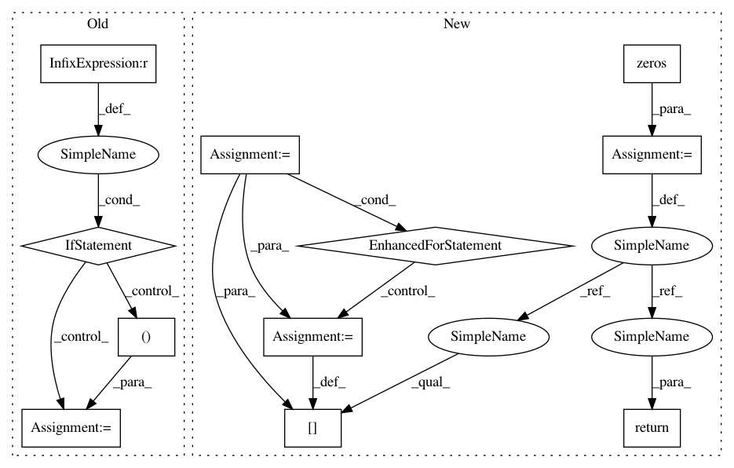

c96af58e6ab2f85626e51a331e8479da49329f0e,deepchem/models/tensorflow_models/__init__.py,TensorflowClassifier,predict_proba_on_batch,#TensorflowClassifier#Any#Any#,654
Before Change
// reshape to batch_size x n_tasks x ...
if batch_outputs.ndim == 3:
batch_outputs = batch_outputs.transpose((1, 0, 2))
elif batch_outputs.ndim == 2:
batch_outputs = batch_outputs.transpose((1, 0))
else:
raise ValueError(
"Unrecognized rank combination for output: %s " %
(batch_outputs.shape,))
After Change
return loss
def fit(self, dataset, nb_epoch=10, max_checkpoints_to_keep=5,
log_every_N_batches=50, **kwargs):
Fit the model.
Parameters
----------
dataset: dc.data.Dataset
Dataset object holding training data
nb_epoch: 10
Number of training epochs.
max_checkpoints_to_keep: int
In pattern: SUPERPATTERN
Frequency: 3
Non-data size: 11
Instances
Project Name: deepchem/deepchem
Commit Name: c96af58e6ab2f85626e51a331e8479da49329f0e
Time: 2017-01-18
Author: joegomes@stanford.edu
File Name: deepchem/models/tensorflow_models/__init__.py
Class Name: TensorflowClassifier
Method Name: predict_proba_on_batch
Project Name: deepchem/deepchem
Commit Name: c96af58e6ab2f85626e51a331e8479da49329f0e
Time: 2017-01-18
Author: joegomes@stanford.edu
File Name: deepchem/models/tensorflow_models/__init__.py
Class Name: TensorflowClassifier
Method Name: predict_proba_on_batch
Project Name: chainer/chainercv
Commit Name: 90b78b1379b3423aa3b4b5d0de7313f88bda23ab
Time: 2019-02-17
Author: yuyuniitani@gmail.com
File Name: chainercv/utils/mask/mask_to_bbox.py
Class Name:
Method Name: mask_to_bbox
Project Name: freelunchtheorem/Conditional_Density_Estimation
Commit Name: da42c137d164ab56a1f1919c8f0ee21e6172f120
Time: 2018-03-20
Author: jonas.rothfuss@gmx.de
File Name: cde/evaluation/GoodnessOfFit.py
Class Name: GoodnessOfFit
Method Name: hellinger_distance_monte_carlo